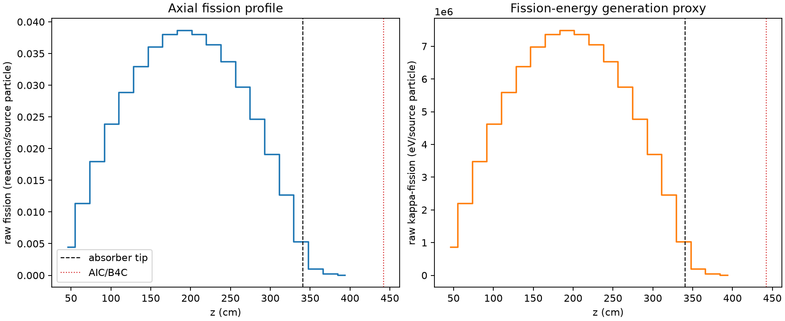
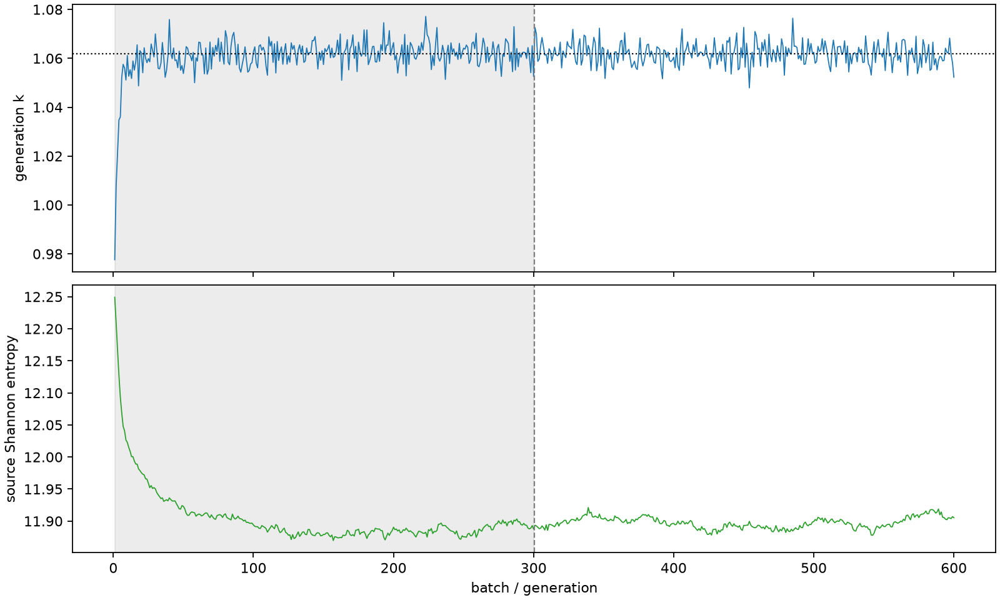

| field | value |
|---|---|
| experiment | V2-ADAPTIVE_01-0021 |
| k | 1.061849952485541 |
| MC standard error | 0.00017961364766452042 |
| seconds | 1045.1499937319895 |
| acceptance | not_assessed |
| convergence | review_required |
Completed is output integrity only; physical and statistical review required. Zero tallies do not prove zero production or zero uncertainty.
| diagnostic | value |
|---|---|
| geometric fuel voxels | 5280 |
| zero fission tally voxels | 0 |
| low signal fuel voxels | 127 |
| low signal fission share | 4.760519842644245e-05 |
| low signal kappa share | 4.7630961993883366e-05 |
| important fission share | 0.9500238337186682 |
| previous filter included | 5153 |
| duration estimate s | 1562.5173488400023 |
| actual minus estimate s | -517.3673551080128 |
| fission relative MC error | statistics |
|---|---|
| all_geometric_fuel | {"voxels": 5280, "positive_mean_voxels": 5280, "zero_mean_voxels": 0, "undefined_relative_error_voxels": 0, "median": 0.009785338710052258, "p95": 0.12600008802216614, "maximum": 0.3178803254790442} |
| low_signal | {"voxels": 127, "positive_mean_voxels": 127, "zero_mean_voxels": 0, "undefined_relative_error_voxels": 0, "median": 0.21945674210576238, "p95": 0.2751750936982111, "maximum": 0.3178803254790442} |
| important_95pct | {"voxels": 3714, "positive_mean_voxels": 3714, "zero_mean_voxels": 0, "undefined_relative_error_voxels": 0, "median": 0.008643728745918601, "p95": 0.013153396984830906, "maximum": 0.016551733183591974} |
| outside_previous_filter | {"voxels": 127, "positive_mean_voxels": 127, "zero_mean_voxels": 0, "undefined_relative_error_voxels": 0, "median": 0.21945674210576238, "p95": 0.2751750936982111, "maximum": 0.3178803254790442} |
| kappa_fission relative MC error | statistics |
|---|---|
| all_geometric_fuel | {"voxels": 5280, "positive_mean_voxels": 5280, "zero_mean_voxels": 0, "undefined_relative_error_voxels": 0, "median": 0.009774050652329482, "p95": 0.12582304149803236, "maximum": 0.31732953828278543} |
| low_signal | {"voxels": 127, "positive_mean_voxels": 127, "zero_mean_voxels": 0, "undefined_relative_error_voxels": 0, "median": 0.21910638911221544, "p95": 0.27467408708998603, "maximum": 0.31732953828278543} |
| important_95pct | {"voxels": 3714, "positive_mean_voxels": 3714, "zero_mean_voxels": 0, "undefined_relative_error_voxels": 0, "median": 0.008633914085791105, "p95": 0.013137609640868035, "maximum": 0.01653462629838658} |
| outside_previous_filter | {"voxels": 127, "positive_mean_voxels": 127, "zero_mean_voxels": 0, "undefined_relative_error_voxels": 0, "median": 0.21910638911221544, "p95": 0.27467408708998603, "maximum": 0.31732953828278543} |
| axial bin | fission share | kappa-fission share |
|---|---|---|
| 1 | 0.010388579849964854 | 0.010389089058771953 |
| 2 | 0.02627878471658276 | 0.026278728293616275 |
| 3 | 0.04144510666929828 | 0.04144499440112665 |
| 4 | 0.05511280457326763 | 0.05511269199833076 |
| 5 | 0.06672961888793325 | 0.06672924732763606 |
| 6 | 0.0760308275712687 | 0.07603056381363725 |
| 7 | 0.08330024837962141 | 0.08330011460405178 |
| 8 | 0.08773830386068987 | 0.0877377262921857 |
| 9 | 0.08918331716536884 | 0.08918286378232217 |
| 10 | 0.08778842974808224 | 0.08778832251423795 |
| 11 | 0.08397845407308324 | 0.08397843400579193 |
| 12 | 0.07783354839331164 | 0.07783337473749546 |
| 13 | 0.06858639861611344 | 0.06858622039024266 |
| 14 | 0.05699525418703021 | 0.056995309771947174 |
| 15 | 0.0441130373639493 | 0.04411289513718492 |
| 16 | 0.029311209026255808 | 0.029310983867725023 |
| 17 | 0.012255678841727466 | 0.012256710413511687 |
| 18 | 0.0023045634861008236 | 0.002305586493260521 |
| 19 | 0.0005243375161535775 | 0.0005245886495965157 |
| 20 | 0.00010149707419664313 | 0.00010155444732772 |
Histories include the inactive-to-active transition at batch 300. kappa-fission approximates fission energy production, not total heat deposition.

